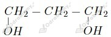
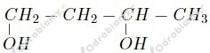
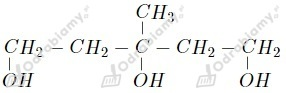
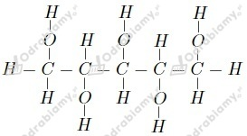

a)

b)

c)

Przedstawiony alkohol posiada 7 atomów węgla w łańcuchu. Nazwa tego alkoholu to heptano-1,2,3-triol .
Wzór strukturalny:

Nazwa systematyczna:
pentano-1,2,3,4,5-pentaol
Zdania prawdziwe to b oraz c .
wyjaśnienie zdania fałszywego a: Glikole to alkohole dihydroksylowe.
a)
b)
Najprostszym alkoholem polihydroksylowym jest etano-1,2-diol o wzorze CH2OH-CH2OH (wzór sumaryczny C2H6O2).
Liczymy zawartość procentową poszczególnych pierwiastków: